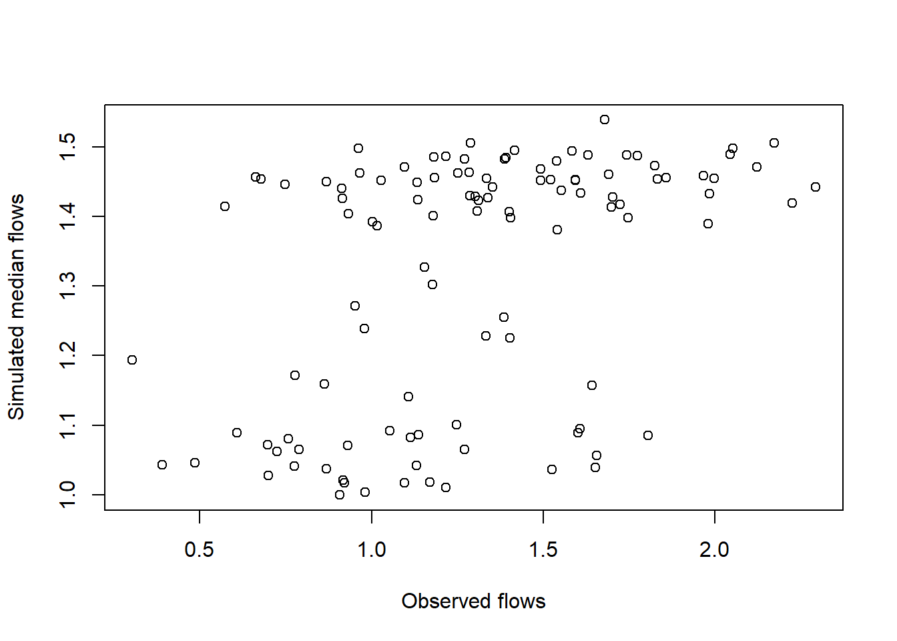

Exercise 7 Use of Hidden Markov Models for forecasting
For the spring season flow (Apr-Jun average) at Lees Ferry on the Colorado River, use HMM to develop a forecasting model, as follows:
7.1 Fit a best HMM model for the spring season flows
First we load libraries, data, and functions as in exercise 4.
set.seed(1) # allow repetition of results
# libraries
libr=c("HiddenMarkov","ggplot2","data.table","ggthemes",
"magrittr","sm","moments","MASS","leaps","verification")
options(warn=-999)
suppressPackageStartupMessages(lapply(libr,
require, character.only = TRUE))# Load flow data
mflow = read.table(
"http://civil.colorado.edu/~balajir/CVEN6833/HWs/HW-3-2018/LeesFerry-monflows-1906-2016.txt")
x = mflow[,2:13] %>% `rownames<-`(mflow[,1]) %>% # Apr - Jun
{rowMeans(.[,4:6])} %>% {.*0.0004690502*0.001} # convert to 10^3 cmsFinding a best HMM implies obtaining the best component (state) PDFs and the state sequence.
## Fit HMM models of orders 1 through 6. Obtain the AIC for each
## Best order is the one with the least value of AIC.
family <- "gamma" # underlying distribution for hmm
discrete <- FALSE
aic1=c()
for(imodel in 1:6){
m <- imodel #model order to fit
stationary <- F # use a stationary distribution of mixtures
# different initial condition types when family == "norm"
ic <- "same.sd"#c("same.sd","same.both","both.diff")
fd.name <- ifelse(family == "norm", "normal", family)
Pi <- Pi_init(m) # T.P.M.
delta <- delta_init(m)
pars <- get.named.parlist(x, m, fd.name, lower=.0, ic)#,start=list(shape1=2,shape2=2))
# set up the model
hmm <- dthmm(x, Pi=Pi, delta=delta, family, pars, nonstat=!stationary, discrete = discrete)
sink("p.7.hmm.fit")
if(imodel < 2){
hmm <- BaumWelch(hmm, bwcontrol(maxiter = 1000,
posdiff=TRUE,converge = expression(diff > tol)))
} else {
hmm <- BaumWelch(hmm, bwcontrol(maxiter = 1000, tol = 1e-08))
}
sink()
# get the hidden states from the fitted model
# Global decoding. To get the probability of being in a state: hmm$u
decoding <- Viterbi(hmm)
# get AIC
aic <- AIC(hmm)
aic1=c(aic1,aic)
}
print(aic1)## [1] 133.1062 132.7230 139.4608 147.7127 158.6281 159.5437We select the HMM with the lowest AIC. In this case, this happens to be of order 2.
We rerun the HMM for best order (m=2) and generate the state sequence (decoding) resulting from it.
## Get the best order
bestorder = order(aic1)[1]
## Fit the model for this best order
m <- bestorder #model order to fit
stationary <- F # use a stationary distribution of mixtures
# different initial condition types when family == "norm"
ic <- "same.sd"#c("same.sd","same.both","both.diff")
fd.name <- ifelse(family == "norm", "normal", family)
Pi <- Pi_init(m) # T.P.M.
delta <- delta_init(m)
pars <- get.named.parlist(x, m, fd.name, lower=.0, ic)#,start=list(shape1=2,shape2=2))
# set up the model
hmm <- dthmm(x, Pi=Pi, delta=delta, family, pars, nonstat=!stationary, discrete = discrete)
sink("p.7.best.hmm")
hmm <- BaumWelch(hmm, bwcontrol(maxiter = 1000, tol = 1e-08))
sink() # end hidding output
decoding <- Viterbi(hmm)The model summary is also attached together with the state probabilities and state sequence plots.
print(summary(hmm))## $delta
## [1] 1.0000e+00 3.5938e-72
##
## $Pi
## [,1] [,2]
## [1,] 0.7377182 0.2622818
## [2,] 0.3051391 0.6948609
##
## $nonstat
## [1] TRUE
##
## $distn
## [1] "gamma"
##
## $pm
## $pm$rate
## [1] 12.729694 7.226309
##
## $pm$shape
## [1] 19.253742 7.583725
##
##
## $discrete
## [1] FALSE
##
## $n
## [1] 111cat('Model order:',m,'\n')## Model order: 2p <- ggplot_stationary_hmm(hmm,.5)
print(p)state.1=ifelse(decoding==2,mean(x)-0.25,NA)
state.2=ifelse(decoding==1,mean(x)+0.25,NA)
plot(x,type="l",ylab="",
main="Modified Spring flows and states (supperposed)")
points(state.2,col='blue')
points(state.1,col='red')
legend("topright",legend=c("state 1","state 2"),col=c("red","blue"),pch=1)7.2 Generate 250 simulations each of same length as the historical data
This involves generating the state sequence from the transition probability matrix and resampling flows from the corresponding component distribution.
# simulate from the transition probability
N = length(x)
nsim = 250
nprob = length(decoding[decoding == 1])/N
delta1=c(nprob,1-nprob) #stationary probability
zsim = mchain(NULL,hmm$Pi,delta=delta1)
spring.sim = matrix(0,nrow=nsim,ncol=N)
# Points where May PDF is evaluated
xeval=seq(min(x)-0.25*sd(x),
max(x)+0.25*sd(x),length=100)
sim.pdf=matrix(0,nrow=nsim,ncol=100) # Array to store May simulated PDF
spring.stat=matrix(NA,ncol = 6,nrow = nsim) # year statistics
colnames(spring.stat) = c("mean","stdev","min","max","skew","cor")
for(isim in 1:nsim){
zsim = simulate(zsim,nsim=N)
## now simulate the flows from the corresponding PDF
flowsim = c()
for(i in 1:N){
if(zsim$mc[i] == 1)xx=rgamma(1,shape=hmm$pm$shape[1],
scale=1/hmm$pm$rate[1])
if(zsim$mc[i] == 2)xx=rgamma(1,shape=hmm$pm$shape[2],
scale=1/hmm$pm$rate[2])
flowsim=c(flowsim,xx)
}
spring.sim[isim,]=flowsim
sim.pdf[isim,]=sm.density(flowsim,eval.points=xeval,
display="none")$estimate
# fill statistics
spring.stat[isim,"mean"]=mean(flowsim)
spring.stat[isim,"max"]=max(flowsim)
spring.stat[isim,"min"]=min(flowsim)
spring.stat[isim,"stdev"]=sd(flowsim)
spring.stat[isim,"skew"]=skewness(flowsim)
spring.stat[isim,"cor"]=cor(flowsim[-N],flowsim[2:N])
}The statistics from the 250 simulations and the simulated PDF are plotted with the original data.
# Compute statistics from the historical data.
obs=1:6
obs[1]=mean(x)
obs[2]=sd(x)
obs[3]=min(x)
obs[4]=max(x)
obs[5]=skewness(x)
obs[6]=cor(x[-N],x[2:N])
# bind the stats of the historic data at the top..
spring.stat=rbind(obs,spring.stat)# function to plot boxplots with the structure: hist. in first row
plot.bp = function(matrix,name){
xmeans=as.matrix(matrix)
n=length(xmeans[,1])
xmeans1=as.matrix(xmeans[2:n,]) #the first row is the original data
xs=1:12
zz=boxplot(split(xmeans1,col(xmeans1)), plot=F, cex=1.0)
zz$names=rep("",length(zz$names))
z1=bxp(zz,ylim=range(xmeans),xlab="",ylab="",cex=1.00)
points(z1,xmeans[1,],pch=16, col="red")
lines(z1,xmeans[1,],pch=16, col="gray")
title(main=name)
}par(mfrow=c(2,3))
plot.bp(spring.stat[,"mean"],"Mean")
plot.bp(spring.stat[,"stdev"],"Standard Deviation")
plot.bp(spring.stat[,"min"],"Min")
plot.bp(spring.stat[,"max"],"Max")
plot.bp(spring.stat[,"skew"],"Skews")
plot.bp(spring.stat[,"cor"],"Lag-1 correlation")xdensityorig = x %>% sm.density(.,eval.points=xeval,display="none") %>%
.$estimate
plot.pdf = function(eval,histPDF,simPDF){
xeval = eval
plot(xeval,histPDF,pch=".",col="red",ylim=range(simPDF,histPDF),
xlab="",ylab = "")
for(i in 1:nsim)lines(xeval,simPDF[i,],col='lightgrey',lty=3)
lines(xeval,histPDF,lwd=3,col="red")
title(main="Historical vs. simulated PDF")
}plot.pdf(xeval,xdensityorig,sim.pdf)7.3 Fit a best GLM to the state sequence
Use the predictor as a function of preceeding winter season climate indices and the state from the previous year.
enso=read.table("C:/Users/alexb/Google Drive/CVEN 6833 ADAT/zz Homeworks/HW3/enso.txt")
amo=read.table("C:/Users/alexb/Google Drive/CVEN 6833 ADAT/zz Homeworks/HW3/amo.txt")
pdo=read.table("C:/Users/alexb/Google Drive/CVEN 6833 ADAT/zz Homeworks/HW3/pdo.txt")
X = data.frame(decoding[-N]-1,enso[-N,],amo[-N,],pdo[-N,])
colnames(X) = c("ts1","enso","amo","pdo")
Y = decoding[-1]-1
links = c("logit", "probit", "cauchit","log","cloglog") # potential links
comb=leaps(X,Y, nbest=40,method="adjr2")$which # all combinations of cov.
aic <- matrix(1e6,ncol=length(links),nrow = length(comb[,1]))
colnames(aic) = links[1:length(links)]
for(k in 1:length(comb[,1])){ # try every link f. with every comb.
xx = X[,comb[k,]] %>% as.data.frame(.)
for(i in 1:length(links)){
zz=try(glm(Y ~ ., data=xx, family = binomial(link=links[i]), maxit=500),silent=TRUE)
if(class(zz)[1]!="try-error")aic[k,i]=zz$aic[1]
}
}
head(aic)## logit probit cauchit log cloglog
## [1,] 97.74487 97.74487 97.74487 9.774487e+01 97.74487
## [2,] 126.88566 126.47855 128.77622 1.000000e+06 128.60526
## [3,] 148.52354 148.52630 148.52114 1.485643e+02 148.53909
## [4,] 148.87507 148.86830 148.91355 1.489096e+02 148.89203
## [5,] 92.64201 92.79124 91.54990 1.000000e+06 93.72228
## [6,] 99.22276 99.27680 98.72933 1.000000e+06 98.71944index = which(aic == min(aic), arr.ind = TRUE) # select min. AIC
print(
sprintf(paste("Choosing the GLM which minimizes AIC for binomial",
"family: %s link function and %s covariates"),
links[index[,"col"]],
paste(colnames(X)[comb[index[,"row"],]],collapse = ', ')))## [1] "Choosing the GLM which minimizes AIC for binomial family: cauchit link function and ts1, amo covariates"state.glm = glm(Y ~ ., data=X[,comb[index[,"row"],]],
family = binomial(link=links[index[,"col"]]))
summary(state.glm) # Model selected##
## Call:
## glm(formula = Y ~ ., family = binomial(link = links[index[, "col"]]),
## data = X[, comb[index[, "row"], ]])
##
## Deviance Residuals:
## Min 1Q Median 3Q Max
## -2.2583 -0.4897 -0.3741 0.5019 2.2797
##
## Coefficients:
## Estimate Std. Error z value Pr(>|z|)
## (Intercept) -2.8665 0.9469 -3.027 0.00247 **
## ts1 3.9808 1.2182 3.268 0.00108 **
## amo 6.1710 2.5808 2.391 0.01680 *
## ---
## Signif. codes: 0 '***' 0.001 '**' 0.01 '*' 0.05 '.' 0.1 ' ' 1
##
## (Dispersion parameter for binomial family taken to be 1)
##
## Null deviance: 145.29 on 109 degrees of freedom
## Residual deviance: 85.55 on 107 degrees of freedom
## AIC: 91.55
##
## Number of Fisher Scoring iterations: 6To evaluate if the difference of the variance of the model is significantly better we will perform an ANOVA (via Likelihood Ratio Test) of the best model vs. the most complex model (4 covariates) with the lowest AIC.
glm.complex = glm(Y ~ ., data=X, family = binomial(link="cauchit"), maxit=500)
anova(glm.complex,state.glm, test = "LRT")## Analysis of Deviance Table
##
## Model 1: Y ~ ts1 + enso + amo + pdo
## Model 2: Y ~ ts1 + amo
## Resid. Df Resid. Dev Df Deviance Pr(>Chi)
## 1 105 84.252
## 2 107 85.550 -2 -1.2984 0.5225The variance is not significantly better and we accept H0 hypothesis. We retain the most complex model.
state.glm=glm.complex7.4 For each year based on the predictors, obtain the probabilities of the states
We have used a binomial glm where state 1 = 0 and state 2 = 1. Therefore, the fitted values (ranging from 0 to 1) represent the probability of of being on state 2.
plot(state.glm$fitted.values)
7.5 Using these state probabilities, simulate flow from the corresponding state PDFs
state.p = 1:N # init. state probabilities
state.p[1] = sum(round(state.glm$fitted.values))/length(state.glm$fitted.values) # 1906
state.p[2:N] = state.glm$fitted.values # 1907 - 2016
state.sim = 1:N # init. simulated state
flow.sim.glm = matrix(0,nrow=nsim,ncol=N)
sim.pdf.glm = matrix(0,nrow=nsim,ncol=100) # Array to store May simulated PDF
spring.stat.glm=matrix(NA,ncol = 6,nrow = nsim) # statistics
colnames(spring.stat.glm) = c("mean","stdev","min","max","skew","cor")
# simulation
for(isim in 1:nsim){
for(j in 1:N){
state.sim[j]=ifelse(runif(1)<state.p[j],2,1)
if(state.sim[j]==1){
flow.sim.glm[isim,j]=rgamma(1,shape = hmm$pm$shape[1],hmm$pm$rate[1])
}else{
flow.sim.glm[isim,j]=rgamma(1,shape = hmm$pm$shape[2],hmm$pm$rate[2])
}
}
sim.pdf.glm[isim,]=sm.density(flow.sim.glm[isim,],
eval.points=xeval,display="none")$estimate
# fill statistics
spring.stat.glm[isim,"mean"]=mean(flow.sim.glm[isim,])
spring.stat.glm[isim,"max"]=max(flow.sim.glm[isim,])
spring.stat.glm[isim,"min"]=min(flow.sim.glm[isim,])
spring.stat.glm[isim,"stdev"]=sd(flow.sim.glm[isim,])
spring.stat.glm[isim,"skew"]=skewness(flow.sim.glm[isim,])
spring.stat.glm[isim,"cor"]=cor(flow.sim.glm[isim,-N],flow.sim.glm[isim,2:N])
}# bind the stats of the historic data at the top..
spring.stat.glm=rbind(obs,spring.stat.glm)
par(mfrow=c(2,3))
plot.bp(spring.stat.glm[,"mean"],"Mean")
plot.bp(spring.stat.glm[,"stdev"],"Standard Deviation")
plot.bp(spring.stat.glm[,"min"],"Min")
plot.bp(spring.stat.glm[,"max"],"Max")
plot.bp(spring.stat.glm[,"skew"],"Skews")
plot.bp(spring.stat.glm[,"cor"],"Lag-1 correlation")plot.pdf(xeval,xdensityorig,sim.pdf.glm)7.6 Compute the median and compare with the observed flow. Compute RPSS at the terciles.
The median values are compared with the observed values in a scatter plot. The correlation is also calculated.
median.sim = 1:N
for(i in 1:N) median.sim[i] = median(flow.sim.glm[,i])
# par(mfrow=c(1,2))
plot(x,type="l")
lines(median.sim,col = "red")plot(x,median.sim,xlab="Observed flows",ylab = "Simulated median flows")
The time series plot shows persistance on the simulated median values, with two clear states. The calculated correlation between observation and simulated median values is:
cor(x,median.sim)## [1] 0.4417929The Ranked Probability Skill Score at the terciles is:
obs = quantile(x,c(0.333,0.6667)) # flow at given terciles
pred.prob = matrix(NA,ncol = nsim, nrow = 2) # Sim. Prob. at observation points
baseline = c(0.333,0.6667) # Terciles
for(i in 1:nsim){
aux.CDF=ecdf(flow.sim.glm[i,]) # ecdf for each simulation
pred.prob[,i] = aux.CDF(obs) # cum. prob. of given flow acc. to ecdf
}
rps(obs,pred.prob,baseline = baseline)$rpss # RPSS## [1] -0.08105927The negative value indicates that the flowstream forecast at the terciles is not improved when using climate-related variables (real probabilities vs. binomial regression prob.).
7.7 Make blind predictions from 2001 and on
Evaluate the performance by computing the skills as above.
xx = X[95:110,] # covariates 2000 - 2010 for glm
blind.flow = matrix(NA,nrow = nsim, ncol = 16) #init sim flows
for(isim in 1:nsim){
s = xx[1,"ts1"] + 1 # initial state for the loop
for(i in 1:16){
xx[i,"ts1"] = s-1 # replace hmm step seq. with simulated step sequence
y = predict(state.glm,newdata = xx[i,],type = "response") # prob of state 2
s = ifelse(runif(1)<y,2,1) # state
f = rgamma(1,shape=hmm$pm$shape[s],scale=1/hmm$pm$rate[s])# streamflow
blind.flow[isim,i] = f # assign to time series
}
}
boxplot(blind.flow,names = seq(1:16)+2000)
title("Forecasted vs. real streamflows")
lines(x[96:111],col="red")
points(x[96:111],col="red")7.7.1 Correlation of median streamflows
blind.median = 1:16
for(i in 1:16){
blind.median[i] = median(blind.flow[,i])
}
plot(x[96:111],blind.median)cor(x[96:111],blind.median)## [1] 0.05956087The correlation is significantly lower than the one obtained for the historical time series.
7.7.2 RPSS
obs = quantile(x[101:111],c(0.333,0.6667)) # flow at given terciles
pred.prob = matrix(NA,ncol = nsim, nrow = 2) # Sim. Prob. at observation points
baseline = c(0.333,0.6667) # Terciles
for(i in 1:nsim){
aux.CDF=ecdf(blind.flow[i,]) # ecdf for each simulation
pred.prob[,i] = aux.CDF(obs) # cum. prob. of given flow acc. to ecdf
}
rps(obs,pred.prob,baseline = baseline)$rpss # RPSS## [1] -0.3043637The score is even more negative, showing the lack of improvement accuracy when forecasting.
7.8 Functions from lib.R
# source functions
# takend from "http://civil.colorado.edu/~balajir/CVEN6833/R-sessions/session3/files-4HW3/lib.R"
Pi_init <- function(n,type='uniform'){
matrix(rep(1/n,n^2),n)}
delta_init <- function(n, type='uniform'){
d <- rnorm(n)^2
d/sum(d)}
ntile.ts <-
function(x, n, limit.type = 'prob', tie = 1, altobs = NULL ){
# returns an integer vector corresponding to n states broken by equal
# probability or equal distance
#
limit <-
if(limit.type == 'prob')
quantile(x,seq(0,1,1/n))
else if(limit.type == 'equal')
seq(min(x),max(x),by=diff(range(x))/n)
if(!is.null(altobs)) limit <- quantile(altobs,seq(0,1,1/n))
b <- integer(length(x))
for(i in 1:(n+1)){
filter <-
if(tie == 1)
x >= limit[i] & x <= limit[i+1]
else
x > limit[i] & x <= limit[i+1]
#only need to set the 1's because b is already 0's
b[filter] <- as.integer(i-1)
}
if(class(x) == 'ts')
return(ts(b,start=start(x),end=end(x)))
else
return(b)
}
get.named.parlist <- function(x,m,dist,ic,...){
require(MASS)
fit <- fitdistr(x,dist,...)
np <- length(fit$estimate)
pars <- vector('list',np)
names(pars) <- names(fit$estimate)
init <- lapply(fit$estimate,max)
names(init) <- names(fit$estimate)
for(j in 1:m){
#print(j)
#browser()
#browser()
this.fit <- fitdistr(x[ntile.ts(x,m) == (j-1)],dist,init,...)
#for(k in 1:np)
# pars[[k]][j] <- this.fit$estimate[k]
for(k in 1:np)
pars[[k]][j] <- fit$estimate[k]
if(dist == 'normal'){
if(ic == 'same.both'){
pars[[k]][j] <- mean(x)
pars[[k]][j] <- sd(x)
} else if( ic == 'same.sd'){
pars[[k]][j] <- mean(x[ntile.ts(x,m) == (j-1)])
pars[[k]][j] <- sd(x)
}else{
pars[[k]][j] <- mean(x[ntile.ts(x,m) == (j-1)])
pars[[k]][j] <- sd(x[ntile.ts(x,m) == (j-1)])
}
}
}
pars
}
AIC.dthmm <- function(x){
## Return the Akaieke Information criterion value for a fitted discrete
## time hidden markov model from the HiddenMarkov package
# Model order
m <- length(x$delta)
# Log Liklihood value
LL <- x$LL
# number of parameters
p <- m+m^2
# AIC
-2*LL + 2*p
}
ggplot_stationary_hmm <- function(x,binwidth=NULL,res=1000,cols=NULL,...){
m <- length(x$delta)
dens <- matrix(0,nrow=m+1,ncol=res)
r <- extendrange(x$x,f=.05)
xrange <- seq(r[1],r[2],len=res)
delta <- statdist(x$Pi)
if(is.null(binwidth)) binwidth <- diff(range(x$x))/8
for(i in 1:m){
if(x$distn == 'gamma'){
dens[i,] <- delta[i]*dgamma(xrange,shape=x$pm$shape[i],rate=x$pm$rate[i])
}else if(x$distn == 'norm'){
dens[i,] <- delta[i]*dnorm(xrange,mean=x$pm$mean[i],sd=x$pm$sd[i])
}else{
stop('Distribution not supported')
}
dens[m+1,] <- dens[m+1,] + dens[i,]
}
p <- ggplot()+
geom_histogram(data=data.frame(x=as.vector(x$x)),aes(x=x,y=..density..),
binwidth=binwidth,fill='white',color='black')+
theme_bw()
dt <- data.table(x=numeric(0),y=numeric(0), state=integer(0))
for(i in 1:m)
dt <- rbind(dt, data.table(x=xrange,y=dens[i,], state=i))
dt$state <- factor(dt$state)
p <- p + geom_line(data=dt,aes(x=x,y=y,color=state)) +
geom_line(data=data.frame(x=xrange,y=dens[m+1,]),aes(x=x,y=y),color='black',size=1) +
scale_color_tableau() +
scale_x_continuous(limits=r)
p
}
statdist <- function(tpm){
m <- nrow(tpm)
ones <- rbind(rep(1,m))
I <- diag(rep(1,m))
U <- matrix(rep(1,m^2),m)
as.vector(ones %*% solve(I - tpm + U))
}